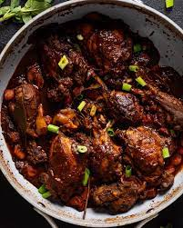

Stew Chicken

Mouth watering Jamaican stew chicken...
Ingredients
- 3-4 lbs. organic chicken, skin removed
- 2-3 Tbsps Extra virgin olive oil
- Tbsps browning
- 2-3 medium carrots, peeled + chopped
- ¾ cup tomato sauce
- 1 tablespoon organic brown sugar
- ½ red onion, chopped
- 6 garlic cloves, minced
- 2 scallions, chopped
- handful fresh thyme sprigs
- 1 teaspoon sea salt
- 1 teaspoon black pepper
- 1 teaspoon Flavo Rice, optional
- 1 teaspoon smoked paprika
- ½ teaspoon minced fresh ginger
- ½ teaspoon ground allspice
- 2 bay leaves
- 1-3 scotch bonnet peppers, minced or whole
- 3 cups organic chicken stock
Steps
MARINATE THE CHICKEN
- In a large bowl, add your freshly cleaned + rinsed chicken along with browning, salt, black pepper, smoked paprika, Flavo Rice (or all-purpose seasoning), ginger, and allspice, mixing everything together until chicken is fully coated. Let it sit for 5-10 minutes.
COOK THE CHICKEN
- In a deep skillet or pot over medium-high heat, add the olive oil and once fully heated, add the chopped onions and garlic, sautéing until fragrant and translucent, about 2-3 minutes.
- Add the marinated chicken and cook on each side until seared, about 3-4 minutes each side. Once brown on each side, add in the carrots, brown sugar, tomato sauce, and chicken stock, stirring everything together until combined.
- Let the mixture boil for a minute or so before adding in the thyme sprigs, scallions, scotch bonnet peppers, bay leaves, and reduce heat to simmer for about 20-25 minutes or until sauce thickens and the chicken is cooked through and tender, stirring occasionally. Remove from heat once done.
- Heat the oven to 180C/160C fan/gas 4 and lightly oil an ovenproof dish (about 30 x 20cm).
- To serve, enjoy the brown stew chicken with your favorite side (i.e. rice, veggies, etc.). Garnish with a bit of dried parsley, if desired.